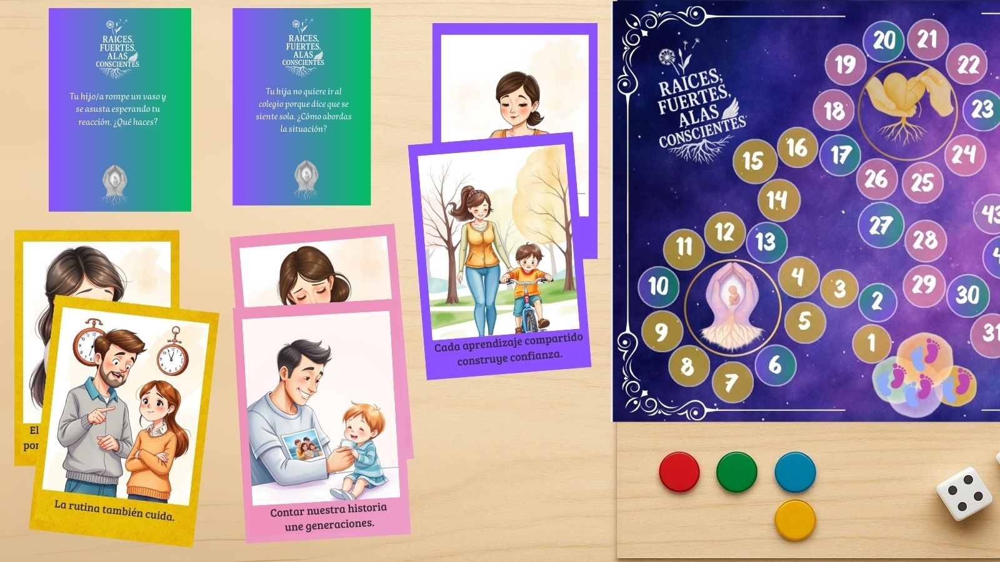

Raíces Fuertes, Alas Conscientes
$44.990
Set para fortalecer competencias parentales y vínculos protectores. Incluye tarjetas, guías y actividades para trabajo individual, pareja, familia o grupo.
- 3 sets base + 10 situaciones + 10 sensibles por set
- Manual con ejemplos clínicos y criterios de accesibilidad
- Indicadores: relato reflexivo, acuerdos y seguimiento